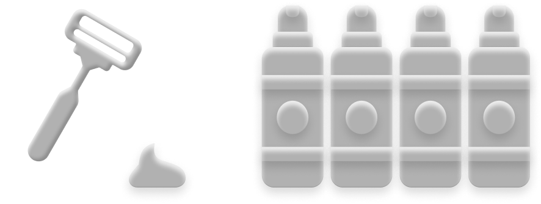
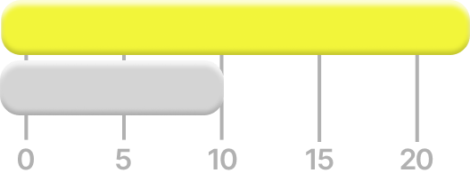
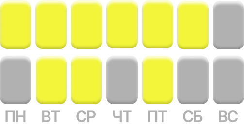
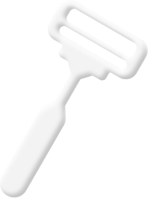

КАк выглядит осознанное бритьё?
4 мин
24,6 тыс.
Мария Красная
виктория николаева

стальные vs кассетные

По сравнению с кассетными экономия от стальных бритв больше в 5–10 раз
1 деление — 5 одноразовых бритв
Стальная бритва — замена 100–150 одноразовых
сравнение цен на бритвы
классическое лезвие стоит в 10–20 раз дешевле кассеты

привыкание к бритве занимает 2–3 бритья
Одноразовые бритвы зачастую нужно покупать снова и снова. Кассеты стоят дорого, а станок быстро прихоит в негодность. Все это превращается в дорогую и не экологичную привычку
Стальная бритва служит годами, лезвия стоят копейки, мусора почти нет, а качество бритья — выше. После первого бритья стальной бритвой к одноразовым возвращаться не захочется
Если у вас тонкая и чувствительная кожа, стальная бритва может вызвать раздражение из‑за очень острого лезвия. В дорожных или экстремальных условиях она повышает риск порезов. В таких случаях удобнее использовать одноразовую бритву
Многоразовая бритва экономит 5–10 раз больше средств, служит годами, не создаёт пластиковых отходов, упрощает логистику (не требует частых закупок и снижает транспортные расходы)
1
экономия денег, контроль расходов
2
лезвия дешевле и служат дольше
3
отсутствие мусора и упрощение логистики
4

высококачественное бритьё
Стальная многоразовая бритва — это экономичная и экологичная альтернатива. При правильном уходе она служит долгие годы, экономя деньги и сокращая отходы. Для получения комфортного бритья требуется небольшая практика, но долгосрочные выгоды очевидны